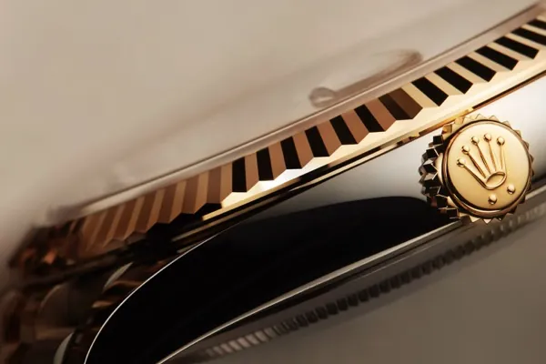
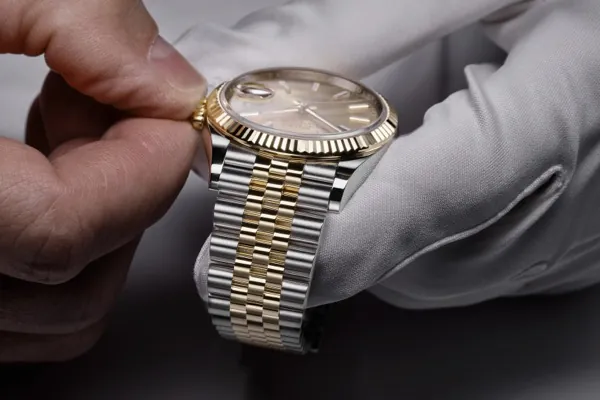
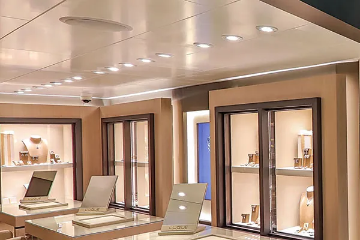
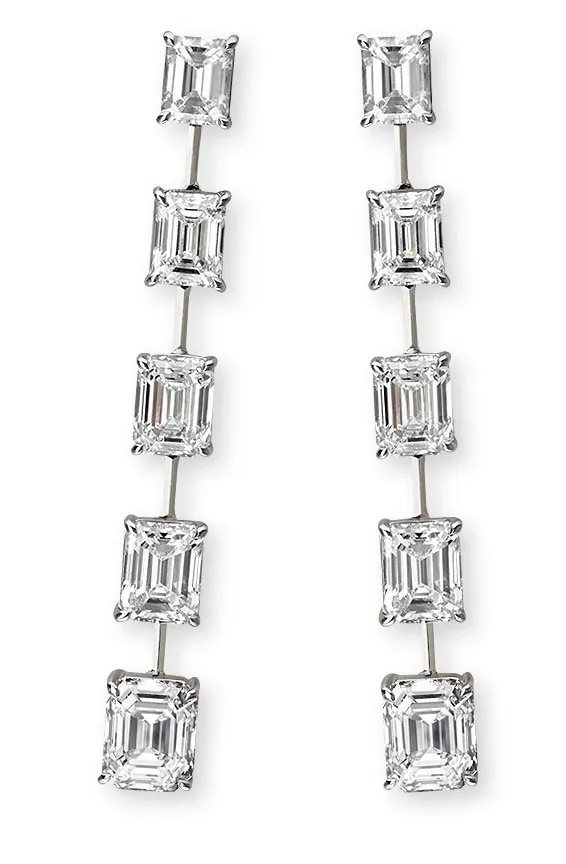
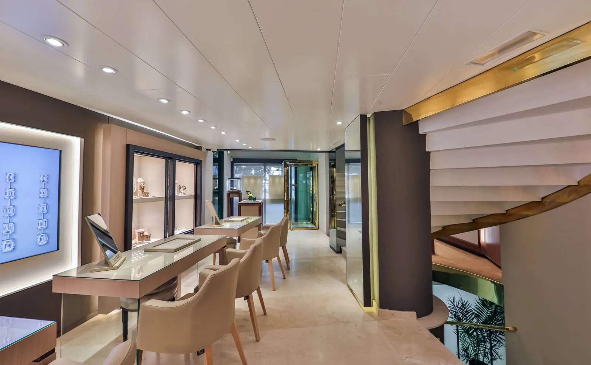
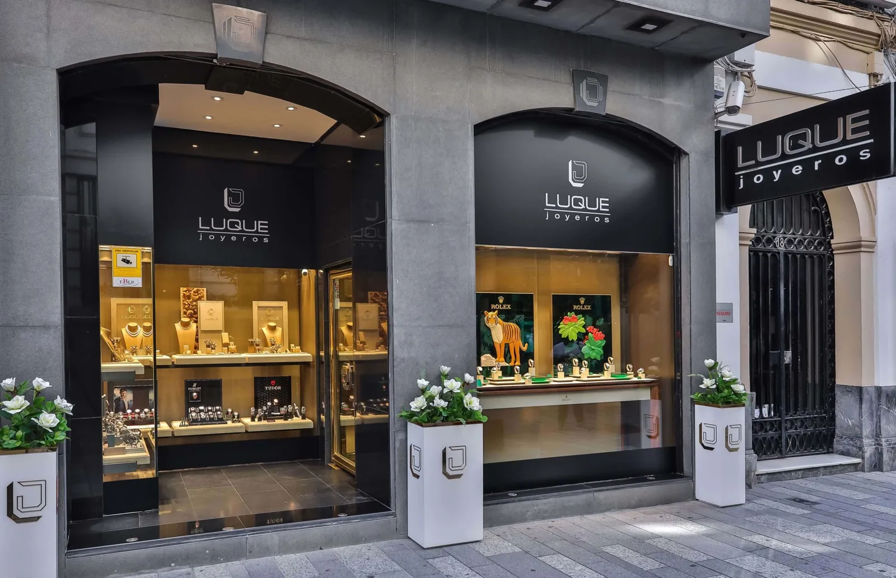

Nada es impersonal ni se deja al azar.
Joyería familiar en la calle Cruz Conde desde que D. Rafael Luque importaba perlas, a principios de los 60. Hoy, también Distribuidor Oficial Rolex en Córdoba.
Distribuidor Oficial Rolex en Córdoba
Luque Joyeros se enorgullece de formar parte de la red mundial de Distribuidores Oficiales Rolex, autorizados para vender y realizar el mantenimiento de los relojes Rolex.

Relojes RolexDescubra las colecciones
MantenimientoNuestra filosofía de mantenimiento
Rolex en Luque JoyerosMás informaciónMaterial oficial de Rolex tal y como aparece en su sección Rolex. Esta sección conserva el diseño de Rolex.

Piezas hechas desde el primer dibujo.
Apostamos por la personalización de nuestras piezas, elaboradas artesanalmente desde el diseño inicial hasta su fabricación.
Ver las 201 piezas de la joyería

Prepara tu bandeja.
Elige aquí las piezas que te gustaría ver. Cuando llegues, te estarán esperando en una bandeja, sobre la mesa. Sin prisas y sin compromiso.
Empezar a elegir
Aquí se atiende sentado, y sin prisas.
C/ José Cruz Conde, 18 · Córdoba
Una historia que se enhebra perla a perla.
Principios de los 60
D. Rafael Luque Rodríguez empieza como importador de perlas, en colaboración con los mejores cultivadores.
Cruz Conde, 18
La joyería abre en el centro de Córdoba: joyería propia, relojería y taller en la misma casa.
Año pendiente de confirmar con la familiaHoy
Distribuidor Oficial Rolex y Tudor, y la misma forma de atender: nada impersonal, nada al azar.
«Allí las joyas brillan de una manera especial.»
Oscar Reyes · reseña en Google
4,9 de 5 · 220 reseñas en Google
Te esperamos en Cruz Conde.
- Dirección
- C/ José Cruz Conde, 18 · 14003 Córdoba
- Horario
- Lunes a viernes, 10:00–13:30 y 17:30–20:30Pendiente de confirmar: hay tres horarios publicados
- Teléfono
- 957 472 125 · 957 478 487
- 683 153 816